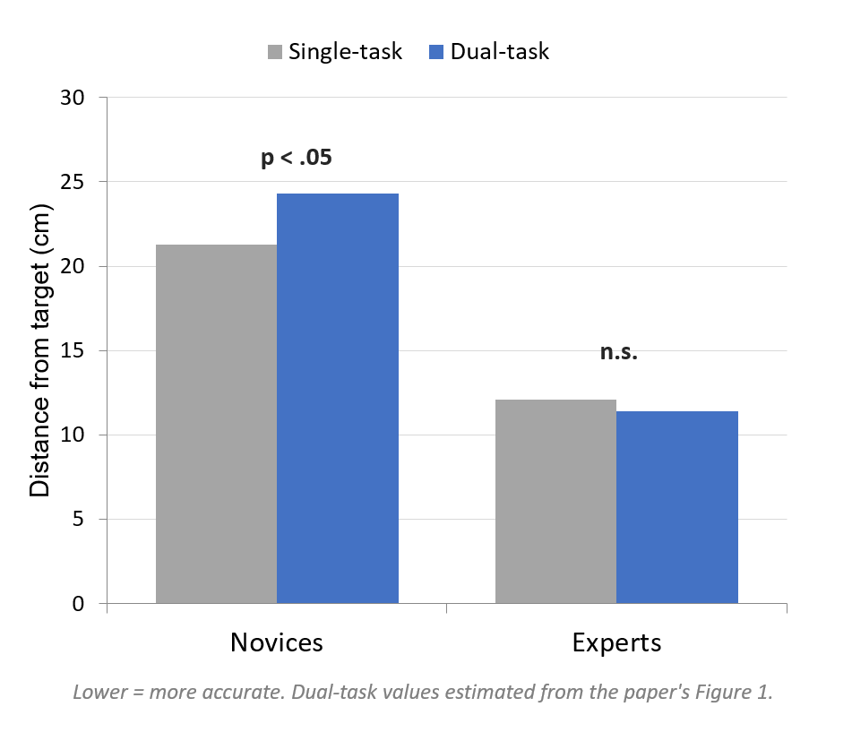

Automaticity & Practice
Why does a beginner have to think through every step, while an expert seems to do it without looking? This lesson is about how practice changes a skill’s attention demand.
These interactive lessons were built by Dr. Kuznetsov using AI tools, with extensive input from and review by the instructor, who is responsible for their content and accuracy.
Learning objectives
You should be able to:
- 1Explain how attention demands change with practice, distinguishing controlled from automatic processing.
- 2Use the Stroop effect as evidence that a well-practiced process (reading) becomes automatic and hard to suppress.
- 3Connect automaticity to Fitts & Posner’s stages of learning — cognitive vs. autonomous.
- 4Predict and explain why a second task hurts a novice but not an expert (Beilock et al.).
Name the ink color
Let’s do a quick demo. You’ll see a grid of color words. Out loud, as fast as you can, name the color of the ink each word is printed in — not the word itself. You’ll do two rounds; press the button when you finish each one, and the page times you.
You couldn’t switch reading off
Almost everyone is slower on Round 2, where the word and the ink color conflict (the word RED printed in blue ink). This is the classic Stroop effect (Stroop, 1935).
For a skilled reader, reading is automatic — you can’t not read the word, even when you’re trying to ignore it. On Round 2 the automatic reading response fights the color-naming you’re trying to do, and resolving that conflict costs time. Naming ink colors, by contrast, is a controlled process — slower and effortful.
That contrast — an automatic process you can’t suppress vs. a controlled one you have to work at — is the heart of this lesson.
Controlled vs. automatic processing
Early in learning, a skill runs in controlled mode; with enough consistent practice, parts of it become automatic. For each dimension below, predict how the two modes differ — then click a cell to check.
| Controlled processing | Automatic processing | |
| Speed | revealSlow | revealFast |
| Attention demand | revealHigh (effortful) | revealLow |
| Processing | revealOne step at a time | revealCan run alongside other tasks |
| Voluntary control | revealEasy to start and stop | revealHard to suppress |
| Typical learner | revealBeginner (cognitive stage) | revealExpert (autonomous stage) |
Reading sits in the right-hand column — fast, low-demand, and hard to suppress — which is exactly why it intrudes on color-naming. Naming the ink sits on the left: slow and effortful.
Shiffrin, R. M., & Schneider, W. (1977). Controlled and automatic human information processing: II. Psychological Review, 84(2), 127–190. doi:10.1037/0033-295X.84.2.127 · Fitts, P. M., & Posner, M. I. (1967). Human Performance. · Stroop, J. R. (1935). J. Exp. Psychol., 18, 643–662. doi:10.1037/h0054651
From cognitive to autonomous
You met Fitts & Posner’s stages of learning earlier in the course. Automaticity is what the last stage is. Recall what happens to attention at each stage — then click to check.
Because the attention demand of a skill falls as it becomes automatic, the same second task should cost a beginner a lot and an expert almost nothing. Let’s test that prediction.
Does a second task hurt everyone equally?
Beilock and colleagues had golfers putt under two conditions — and the twist was who the golfers were.
The second task pulls attention away from putting. Predict: will it hurt the novices’ putting? The experts’? Why? (Hint: think about Fitts & Posner’s stages.)
Dual-task cost depends on the stage of learning

Novices are in the cognitive stage — each step needs attention, so a second task takes it away. Experts are in the autonomous stage — the skill runs automatically, leaving attention free for the tone task.
This is why a patient early in rehab may walk fine alone but stumble when you ask them a question — the movement still demands attention. As it re-automates, that dual-task cost shrinks (exactly the fall-risk logic from Lesson 2).
Beilock, S. L., Bertenthal, B. I., McCoy, A. M., & Carr, T. H. (2004). Haste does not always make waste: Expertise, direction of attention, and speed versus accuracy in performing sensorimotor skills. Psychonomic Bulletin & Review, 11(2), 373–379. doi:10.3758/BF03196585
Summary & the next step
- 1With practice, a skill shifts from controlled (slow, effortful, one-step-at-a-time) to automatic (fast, low-demand, hard to suppress).
- 2The Stroop effect shows automaticity directly: you can’t switch off reading, so it intrudes on naming the ink color.
- 3This maps onto Fitts & Posner: cognitive (controlled) → autonomous (automatic).
- 4A second task hurts a novice but not an expert (Beilock) — dual-task cost depends on the stage of learning.
Lesson 4 — Directing Attention: inattentional blindness (the famous “invisible gorilla”), and internal vs. external focus of attention — where you point attention changes how well a skill runs.
Your passphrase for this lesson is AUTOMATIC. Enter it in the Canvas quiz to record completion.